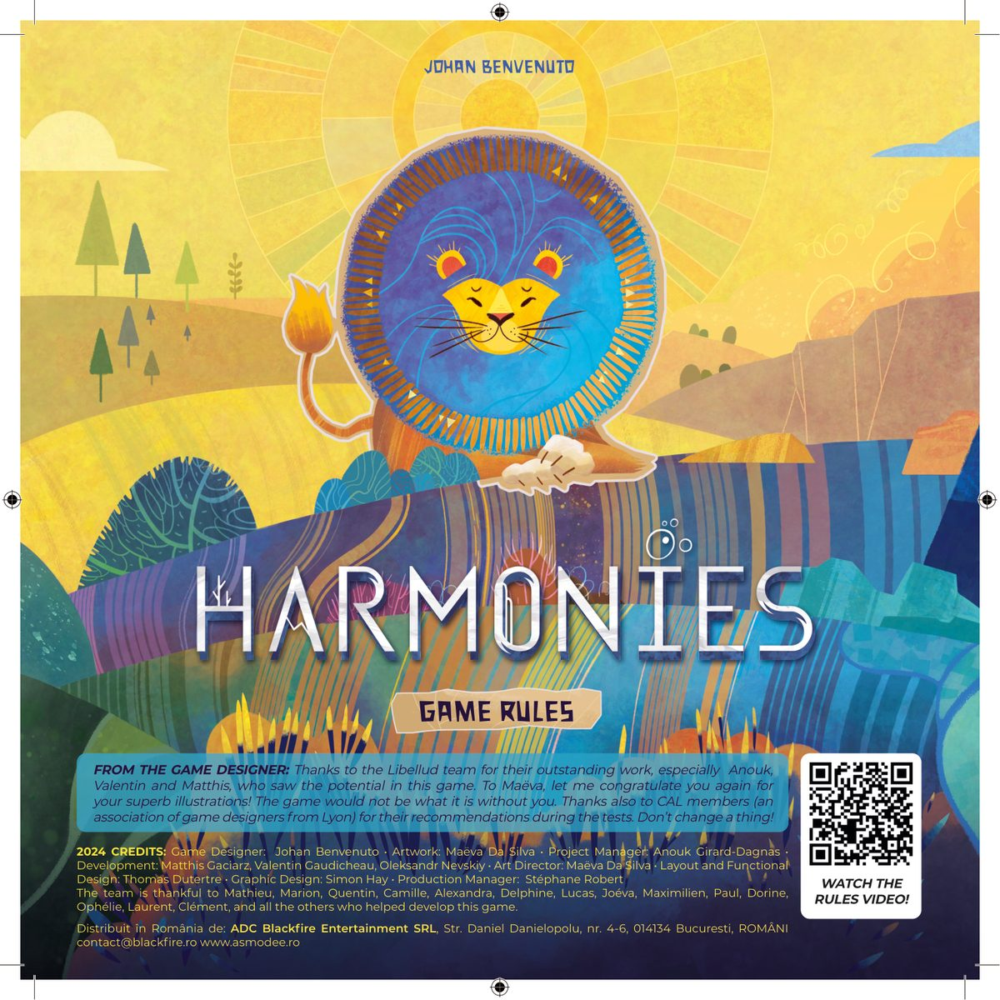
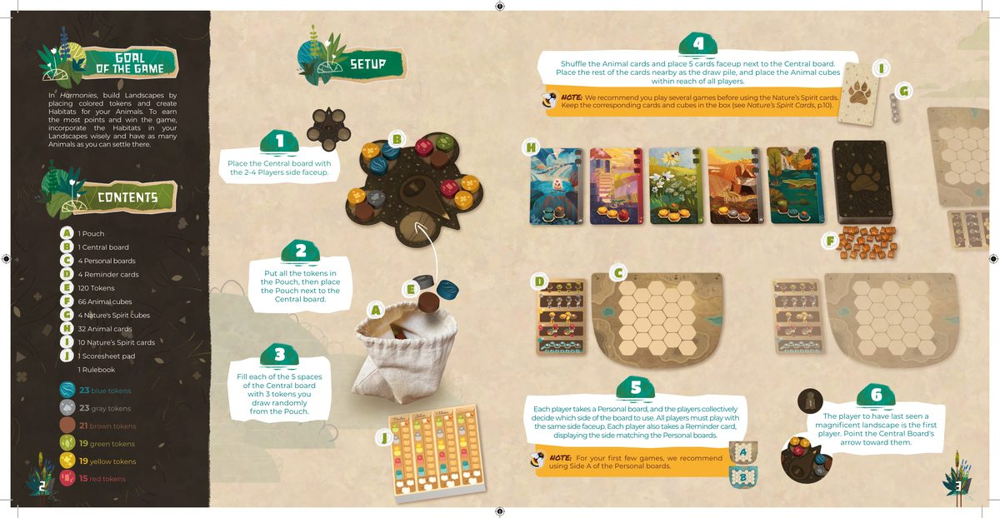
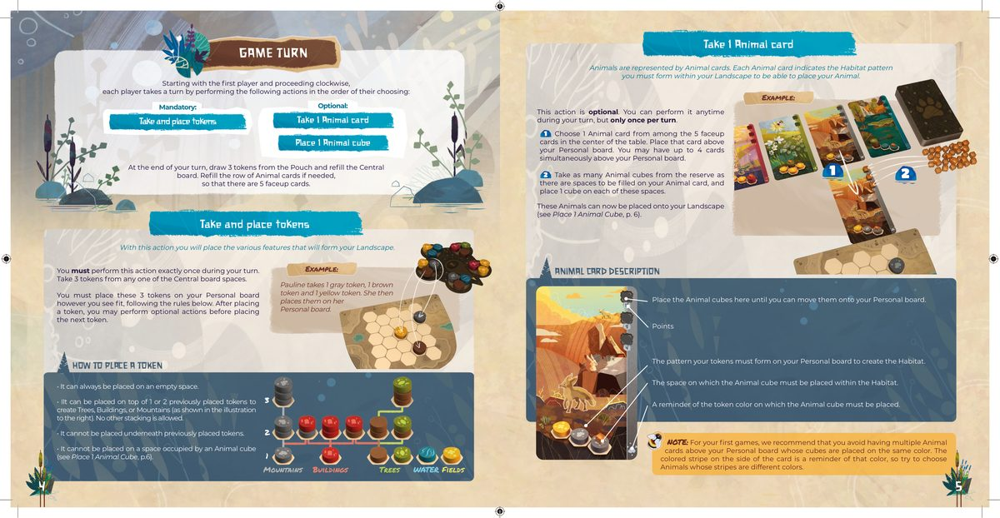
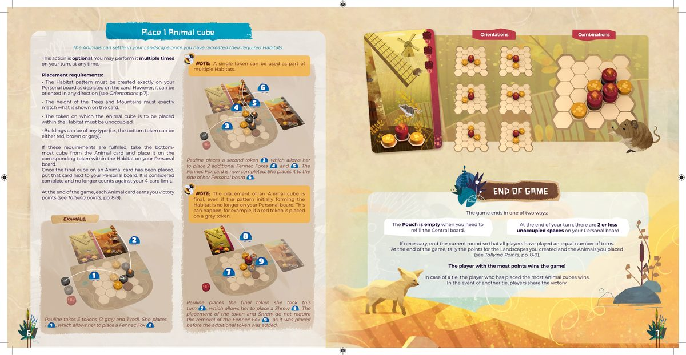
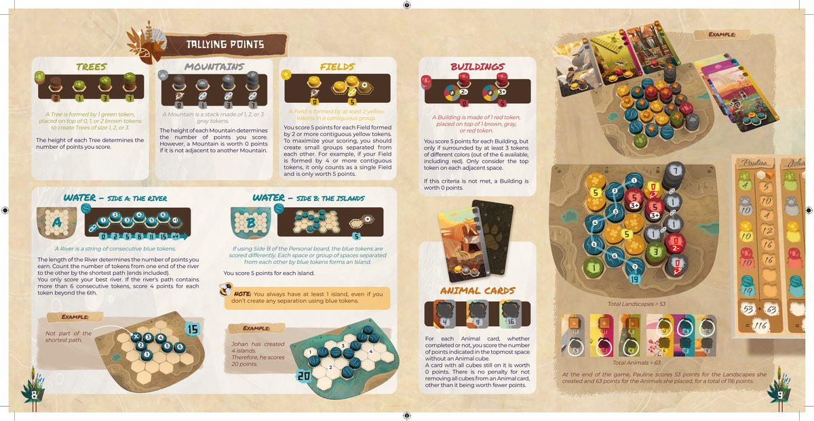
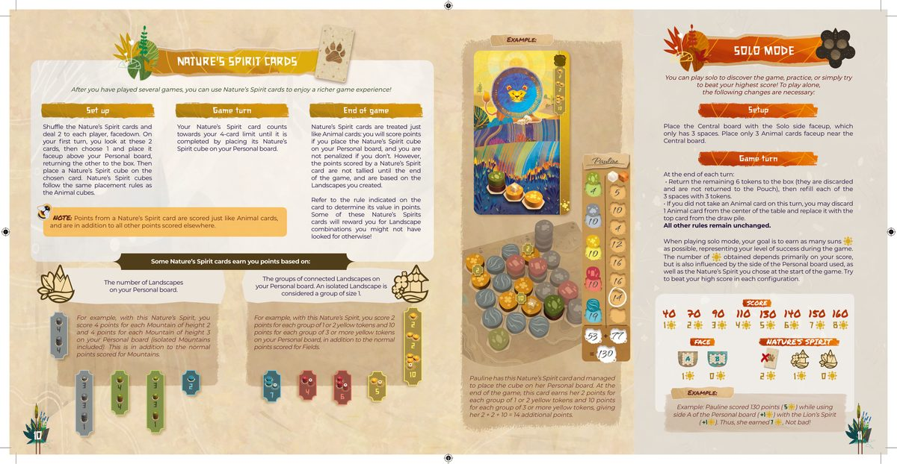
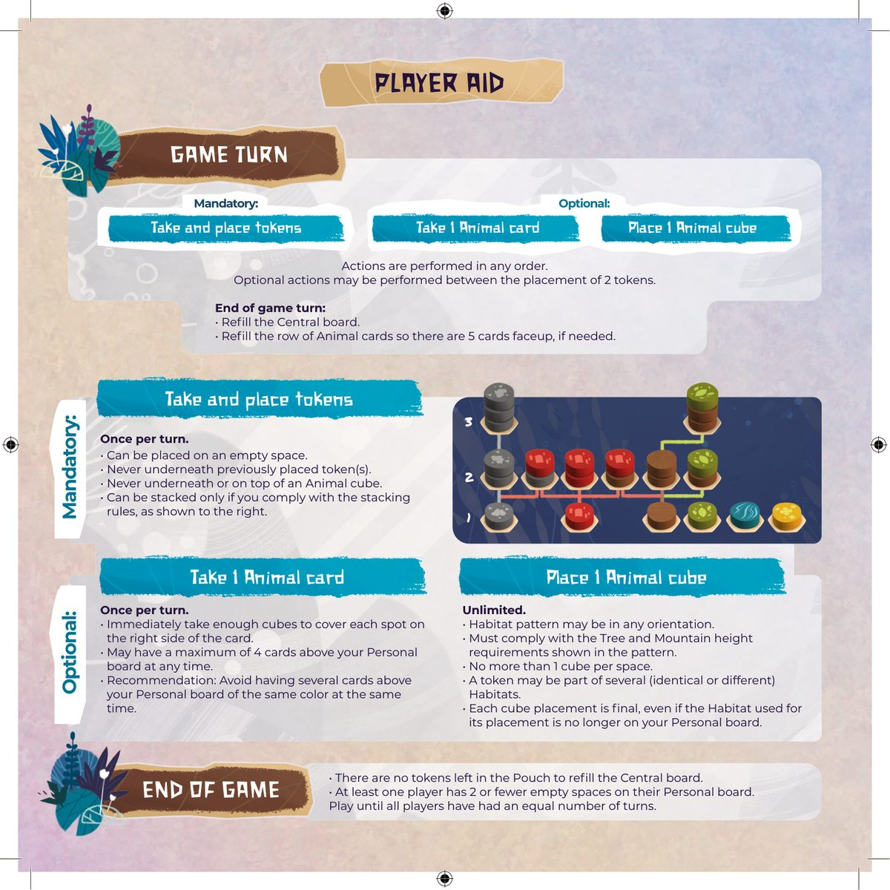

🦁 自然和弦
Harmonies · 设计:Johan Benvenuto · Libellud 出版 · 1–4 人 · 约 30–45 分钟 · 景观拼放(官方英文规则书全文翻译)

本页为《自然和弦》(Harmonies,Johan Benvenuto 设计,Libellud 出版)的官方英文规则书(LIBELLUD_HARMONIES_RULES_EN,PDF 7 页 = 小册子 12 页)全文翻译,底本为出版社经 BoardGameGeek Files 区发布的官方规则书 PDF,逐页全文译出,原书页面图随文嵌入——点击任意图片即可放大查看。规则内容归 Libellud 及版权方所有,译文仅供个人学习查阅。
整理说明:〔图:……〕表示此处为印刷插图/图形符号,非正文文字;〔示例:……〕为原书示例栏的整理标题。术语译法对照(首现括注英文):景观=Landscape、栖息地=Habitat、板块=Token(灰=山石/蓝=水/棕=树干/绿=树冠/黄=田野/红=建筑)、动物方块=Animal cube、动物卡=Animal card、自然之灵=Nature's Spirit(卡/方块)、中央版图=Central board、个人版图=Personal board、提示卡=Reminder card、布袋=Pouch、计分纸本=Scoresheet pad、树=Tree、山=Mountain、田野=Field、建筑=Building、河流=River、岛屿=Island、太阳=Sun(单人模式)。原书 PDF 自带完整文字层,转录以文字层为源;计分表、太阳换算表等纯图形数字经多轮裁剪放大视觉转录与 OCR 坐标双源核验(树/山 1·3·7、河 0/2/5/8/11/15/+4、太阳 40–160→1–8);组件清单加和自洽(23+23+21+19+19+15=120 板块);示例分数 53+63=116、53+77=130 均与原书一致。译文中数字与数量均照原书逐项核对,未按游戏常识修正。
〔图:封面——HARMONIES 自然和弦,蓝金色狮子头像与层叠彩色条纹景观插画,设计者 JOHAN BENVENUTO,Libellud 出品;右下角为「观看规则视频!」二维码面板〕
来自游戏设计师的话(FROM THE GAME DESIGNER)
感谢 Libellud 团队的杰出工作,尤其是 Anouk、Valentin 和 Matthis,是他们看到了这款游戏的潜力。也要对 Maëva 说:再次恭喜你画出如此精彩的插画!没有你,这款游戏不会是现在的样子。同时感谢 CAL 成员(里昂的游戏设计师协会)在测试期间提出的建议。请保持下去,什么都不要改!
2024 制作名单(CREDITS)
- 游戏设计(Game Designer):Johan Benvenuto
- 美术(Artwork):Maëva Da Silva
- 项目经理(Project Manager):Anouk Girard-Dagnas
- 开发(Development):Matthis Gaciarz、Valentin Gaudicheau、Oleksandr Nevskiy
- 美术指导(Art Director):Maëva Da Silva
- 排版与功能设计(Layout and Functional Design):Thomas Dutertre
- 平面设计(Graphic Design):Simon Hay
- 制作经理(Production Manager):Stéphane Robert
制作团队同时感谢 Mathieu、Marion、Quentin、Camille、Alexandra、Delphine、Lucas、Joéva、Maximilien、Paul、Dorine、Ophélie、Laurent、Clément,以及所有帮助开发这款游戏的朋友。
〔图:罗马尼亚发行信息——Distribuit în România de: ADC Blackfire Entertainment SRL, Str. Daniel Danielopolu, nr. 4-6, 014134 Bucuresti, ROMÂNIA;contact@blackfire.ro / www.asmodee.ro〕
观看规则视频!(WATCH THE RULES VIDEO!)

游戏目标(GOAL OF THE GAME)
在《自然和弦》(Harmonies)中,你要通过放置彩色板块来构建景观(Landscapes),并为你的动物(Animals)创造栖息地(Habitats)。要想获得最高分并赢得游戏,就要明智地把栖息地融入你的景观之中,并让尽可能多的动物定居其中。
〔图:目标示意——个人版图上以彩色板块拼出山、树、田野等景观,动物方块立于其上〕
游戏组件(CONTENTS)
〔图:组件总览照片,各组件配标签字母 A–J〕
- A 布袋(Pouch)× 1
- B 中央版图(Central board)× 1
- C 个人版图(Personal board)× 4
- D 提示卡(Reminder card)× 4
- E 板块(Token)× 120
- F 动物方块(Animal cube)× 66
- G 自然之灵方块(Nature's Spirit cube)× 4
- H 动物卡(Animal card)× 32
- I 自然之灵卡(Nature's Spirit card)× 10
- J 计分纸本(Scoresheet pad)× 1
- 规则书(Rulebook)× 1
其中 120 枚板块按颜色分为:
- 灰色板块 × 23
- 蓝色板块 × 23
- 棕色板块 × 21
- 绿色板块 × 19
- 黄色板块 × 19
- 红色板块 × 15
设置(SETUP)
- 将中央版图的 2–4 人面朝上放置。
〔图:花朵造型的中央版图,附背面小图〕
- 把所有板块放入布袋,然后将布袋放在中央版图旁。
〔图:布袋与多枚彩色板块,标签 A 指向布袋、E 指向板块〕
- 从布袋中随机抽取板块,在中央版图的 5 个区域各放 3 枚。
- 洗混动物卡,在中央版图旁翻开 5 张。其余的牌放在附近作为抽牌堆,并将动物方块放在所有玩家都够得着的地方。
〔图:5 张翻开的动物卡一字排开(水獭瀑布、灯笼神庙、蜜蜂花丛、岩羊丘陵、鳄鱼湿地等),旁边是背面朝上的抽牌堆与动物方块;标签 I 指向单张动物卡、H 指向成排的 5 张、G/F 指向动物方块〕
注意(NOTE):我们建议先游玩几局,之后再使用自然之灵卡。此前请将对应的卡牌与方块留在盒内(见「自然之灵卡」,原书第 10 页)。
- 每位玩家拿取 1 块个人版图,由玩家们共同决定使用哪一面。所有玩家必须使用相同的一面。每位玩家再拿取 1 张提示卡,展示与个人版图对应的一面。
〔图:两块个人版图(蜂窝状六边形格)与配套提示卡;右下角为 A 面、B 面两张提示卡样张,标签 C 指向个人版图、D 指向提示卡〕
注意(NOTE):前几局游戏,我们建议使用个人版图的 A 面。
- 最近一次欣赏过壮丽景观的玩家成为起始玩家。将中央版图上的箭头指向该玩家。
〔图:玩家双手捧着彩色动物方块,左上角为写着「1」的起始玩家标记〕

回合流程(GAME TURN)
从起始玩家开始,按顺时针顺序,每位玩家依次进行自己的回合,并以自选的顺序执行以下行动:
必须(Mandatory):
- 拿取并放置板块(Take and place tokens)
可选(Optional):
- 拿取 1 张动物卡(Take 1 Animal card)
- 放置 1 个动物方块(Place 1 Animal cube)
回合结束时:从布袋中抽取 3 枚板块,补满中央版图。如有需要,补翻动物卡,使场上保持 5 张翻开的卡。
拿取并放置板块(Take and place tokens)
通过这一行动,你将放置构成景观的各种要素。
你必须在自己的回合中恰好执行此行动一次。从中央版图的任意一个区域拿取 3 枚板块。
你必须将这 3 枚板块按自己的意愿放到你的个人版图上,并遵守下述规则。放置 1 枚板块后,你可以先执行可选行动,再放置下一枚板块。
〔示例:Pauline 拿取 1 枚灰色、1 枚棕色和 1 枚黄色板块,然后将它们放到自己的个人版图上。箭头从中央版图上的三枚板块指向她个人版图上的六边形格〕
如何放置板块(HOW TO PLACE A TOKEN)
- 板块总可以放在空格上。
- 板块可以放在 1 或 2 枚已放置的板块之上,以构成树、建筑或山(如右侧图示)。除此之外不允许任何叠放。
- 板块不能放在已放置板块的下方。
- 板块不能放在已被动物方块占据的格子上(见「放置 1 个动物方块」,原书第 6 页)。
〔图:叠放高度图解——高度 1:单枚灰色(山)、单枚红色(建筑)、单枚棕色、单枚绿色(树)、单枚蓝色(水)、单枚黄色(田野);高度 2:灰叠灰(山)、红叠棕/灰/红(建筑)、绿叠棕(树);高度 3:三枚灰色叠成最高的山。下方标签自左向右为:山(MOUNTAINS)· 建筑(BUILDINGS)· 树(TREES)· 水(WATER)· 田野(FIELDS)〕
拿取 1 张动物卡(Take 1 Animal card)
动物由动物卡代表。每张动物卡都标示了你必须在景观中拼出的栖息地图案,拼成后才能放置对应的动物。
此行动为可选。你可以在回合中的任意时机执行,但每回合限一次。
- 从桌面中央 5 张翻开的动物卡中选择 1 张,将它放到你的个人版图上方。你的个人版图上方同时最多可以有 4 张卡。
- 从储备区拿取与动物卡上待填格数相同的动物方块,并在每个格子上各放 1 个方块。
〔图:示例——箭头 ① 从中央成排的动物卡指向放到个人版图上方的一张卡;箭头 ② 从动物方块堆指向该卡,方块逐一放到卡上的格子中〕
这些动物现在可以被放置到你的景观上了(见「放置 1 个动物方块」,原书第 6 页)。
注意(NOTE):前几局游戏,我们建议避免让个人版图上方同时存在多张动物方块压在同一颜色上的动物卡。卡侧的彩色条纹就是该颜色的提示,尽量选择条纹颜色互不相同的动物。
动物卡说明(ANIMAL CARD DESCRIPTION)
〔图:一张动物卡的分区标注〕
- 卡右侧的分数栏(Points)。
- 图案区:你必须在个人版图上用板块拼出的栖息地图案。
- 图案中高亮的格子:栖息地内动物方块必须放置的板块位置。
- 侧边彩色条纹:动物方块所压板块颜色的提示。
- 卡下缘的方块槽:在动物方块能移上个人版图之前,先放在这里。

放置 1 个动物方块(Place 1 Animal cube)
当你拼出动物所需的栖息地后,动物便可以在你的景观中定居。
此行动为可选。你可以在回合中的任意时机执行,次数不限。
放置条件(Placement requirements):
- 栖息地图案必须在你的个人版图上精确拼出、与卡上所示一致,但可以朝任意方向(见「朝向」,原书第 7 页)。
- 树与山的高度必须与卡上所示的完全一致。
- 栖息地中动物方块所要放置的那枚板块必须未被占据。
- 建筑可以是任何类型(即底层板块可以是红色、棕色或灰色)。
满足这些条件后,从动物卡上最底部取下 1 个方块,放到你个人版图上栖息地中对应的板块上。
当一张动物卡上的最后一个方块被放置后,将该卡移到你的个人版图旁边。它视为已完成,不再计入你 4 张卡的上限。
游戏结束时,每张动物卡都为你赢得胜利分(见「计分」,原书第 8–9 页)。
注意(NOTE):同一枚板块可以同时作为多个栖息地的一部分。
注意(NOTE):动物方块的放置是最终结果,即使最初构成栖息地的图案后来已不在你的个人版图上也是如此。例如,在一枚灰色板块上又放了 1 枚红色板块时就会出现这种情况。
〔示例(Pauline 的完整回合):Pauline 拿取 3 枚板块(2 灰 1 红)。她先放第 ① 枚,使她可以放下 1 只耳廓狐(Fennec Fox)②;随后放置第 ② 枚……图中序号 ①–⑨ 依次标记:① 放置第 1 枚板块;② 放上第 1 只耳廓狐;③ 放置第 2 枚板块;④⑤ 又放下 2 只耳廓狐——耳廓狐卡就此完成,她把这张卡移到个人版图旁 ⑥;⑦ 放置本回合的最后 1 枚板块,使她可以放下 1 只鼩鼱(Shrew)⑧;鼩鼱的放置并不要求移走先前放下的耳廓狐 ⑨,因为那是在新增板块之前就已放好的〕
〔图:朝向(ORIENTATIONS)——同一个栖息地图案(红黄相间的小图案)以六种不同旋转方向摆在六边形网格中,说明图案可以任意朝向摆放〕
〔图:组合(COMBINATIONS)——一张较大的六边形网格,展示一个同时包含多枚红色建筑(有的两层高、顶上压着动物方块)与黄色花田板块的组合图案;左侧为一张风车主题动物卡(老鼠),卡右侧分数栏自上而下标注若干分值〕
游戏结束(END OF GAME)
游戏以下列两种方式之一结束:
- 需要补满中央版图时,布袋已经空了。
- 你的回合结束时,个人版图上只剩 2 个或更少空格。
如有必要,完成当前这一轮,使所有玩家进行过的回合数相等。
游戏结束时,为你创造的景观和放置的动物结算分数(见「计分」,原书第 8–9 页)。
分最高的玩家赢得游戏!
平局时,放置动物方块最多的玩家获胜。若仍然平局,则玩家们共享胜利。

计分(TALLYING POINTS)
〔本页对应原书第 8–9 页:六种景观的计分规则与总示例。以下每种景观旁的图解均给出分值徽章,数值逐项转录〕
树(TREES)
树由 1 枚绿色板块放在 0、1 或 2 枚棕色板块之上构成,形成尺寸 1、2、3 的树。
每棵树的高度决定你的得分。
〔图:计分图解——棕色叠棕(无绿色)不算树、0 分;1 绿 = 1 分;1 绿叠 1 棕 = 3 分;1 绿叠 2 棕 = 7 分〕
| 树的尺寸 | 1(仅绿色) | 2(绿叠 1 棕) | 3(绿叠 2 棕) |
|---|---|---|---|
| 得分 | 1 | 3 | 7 |
山(MOUNTAINS)
山是由 1、2 或 3 枚灰色板块叠成的堆。
每座山的高度决定你的得分。但是,如果一座山不与其他山相邻,则它值 0 分。
〔图:计分图解——2 枚灰板块的山带断链标记(不相邻)= 0 分;高 1 = 1 分;高 2 = 3 分;高 3 = 7 分;「锁链」图标表示相邻相连的山〕
| 山的高度 | 1 | 2 | 3 |
|---|---|---|---|
| 得分 | 1 | 3 | 7 |
田野(FIELDS)
田野由至少 2 枚相连的黄色板块形成。
每片由 2 枚或更多相连黄色板块形成的田野得 5 分。为了让得分最大化,你应当让田野保持彼此分离的小组。例如,若一片田野由 4 枚或更多相连板块组成,它只算作一片田野,只值 5 分。
〔图:计分图解——单独 1 枚黄色板块 = 0 分;2 枚及以上相连黄色板块圈出一片田野 = 5 分〕
建筑(BUILDINGS)
建筑由 1 枚红色板块放在 1 枚棕色、灰色或红色板块之上构成。
每座建筑得 5 分,但前提是它被至少 3 种不同颜色的板块包围(6 种可用颜色中任选,含红色)。只计算每个相邻格最顶层的板块。
若不满足此条件,建筑值 0 分。
〔图:计分图解——建筑周围只有 2 种颜色(标记「2−」)不满足条件;至少 3 种颜色(标记「3+」)时建筑值 5 分〕
水 · A 面:河流(WATER — SIDE A: THE RIVER)
河流是一串连续的蓝色板块。
河流的长度决定你的得分:从河流一端沿最短路径数到另一端的板块数量(含两端)。你只为最好的一条河流计分。若河流路径包含超过 6 枚连续板块,则第 6 枚之后的每枚板块额外得 4 分。
〔图:河流计分轨——1 枚 = 0 分;2 枚 = 2 分;3 枚 = 5 分;4 枚 = 8 分;5 枚 = 11 分;6 枚 = 15 分;此后每多 1 枚 +4 分〕
| 河流长度 | 1 | 2 | 3 | 4 | 5 | 6 | 6 枚以上每增 1 枚 |
|---|---|---|---|---|---|---|---|
| 得分 | 0 | 2 | 5 | 8 | 11 | 15 | +4 |
〔示例:一条蜿蜒的蓝色河流,其中一枚板块标注「×」并注明「不计入最短路径」,按最短路径共 6 枚,得 15 分〕
水 · B 面:岛屿(WATER — SIDE B: THE ISLANDS)
若使用个人版图的 B 面,蓝色板块的计分方式不同。被蓝色板块分隔开的每个格子或每组格子都构成一座岛屿(Island)。
每座岛屿得 5 分。
注意(NOTE):即使你完全没有用蓝色板块做分隔,你也始终至少拥有 1 座岛屿。
〔示例:Johan 分隔出了 4 座岛屿,因此得到 20 分〕
动物卡(ANIMAL CARDS)
每张动物卡——无论完成与否——你的得分都是卡上最顶端未放动物方块的格子所标的分值。
〔图:三张示例动物卡,按剩余方块情况分别得 4 分、9 分、16 分〕
仍压着全部方块的卡值 0 分。未移走动物卡上全部方块没有任何惩罚,只是卡的分值更低而已。
〔示例:游戏结束时,Pauline 的景观得 53 分、动物得 63 分,总计 116 分(图中标注 景观合计 = 53、动物合计 = 63)〕

自然之灵卡(NATURE'S SPIRIT CARDS)
游玩数局之后,你可以加入自然之灵卡,获得更丰富的游戏体验!
洗混自然之灵卡,背面朝发给每位玩家 2 张。在你的第一个回合,查看这 2 张卡,选择 1 张正面朝上放到你的个人版图上方,另一张放回盒中。然后在选中的卡上放 1 个自然之灵方块。自然之灵方块遵循与动物方块相同的放置规则。
自然之灵卡视同动物卡:若你把自然之灵方块放到个人版图上,你就得到卡上的分数;若没有放,也不会受到惩罚。不过,自然之灵卡的分数要到游戏结束才结算,且基于你创造的景观。
参照卡上写明的规则来确定它的分值。有些自然之灵卡会奖励你一些平时未必会去追求的景观组合!
在自然之灵方块被放上个人版图、该卡完成之前,你的自然之灵卡计入 4 张卡的上限。
注意(NOTE):自然之灵卡的分数与动物卡一样结算,并且加在所有其他得分之外。
〔示例:Pauline 手持这张自然之灵卡并成功把方块放上了个人版图。游戏结束时,这张卡为她带来:每组 1–2 枚黄色板块 2 分、每组 3 枚及以上黄色板块 10 分,合计 2 + 2 + 10 = 14 额外分〕
〔示例:上图另一张自然之灵卡——个人版图上每座高度 2 的山得 4 分、每座高度 3 的山得 4 分(含孤立的山),加在山的正常得分之外〕
〔示例:Pauline 总分 130(景观 53 + 动物 77,其中自然之灵 +14),个人版图使用 A 面〕
单人模式(SOLO MODE)
你可以单人游玩,来认识这款游戏、练习打法,或者单纯挑战自己的最高分!单人游玩需做如下改动:
设置(Set up)
- 将中央版图的单人面朝上放置,该面只有 3 个区域。
- 中央版图旁只翻开 3 张动物卡。
回合流程(Game turn)
每回合结束时:
- 将余下的 6 枚板块放回盒中(弃掉,不放回布袋),然后向 3 个区域各补 3 枚板块。
- 若你本回合没有拿取动物卡,可以将桌面中央的 1 张动物卡弃掉,用抽牌堆顶的卡替换。
其余规则不变。
游戏结束与太阳(End of game)
单人模式的目标是赢取尽可能多的太阳(suns),太阳代表你在游戏中的成功程度。太阳数量主要取决于你的得分,但也受所用的个人版图面以及开局选择自然之灵的影响。试着在每种配置下刷新你的最高纪录。
〔图:太阳换算表(SCORE)——40 分 = 1 个太阳、70 分 = 2 个、90 分 = 3 个、110 分 = 4 个、130 分 = 5 个、140 分 = 6 个、150 分 = 7 个、160 分 = 8 个;表下两行修正:面(FACE)A 面 = +1 太阳、B 面 = +0;自然之灵(NATURE'S SPIRIT)按卡面所标太阳值加成(图中示例卡片分别标 2、1、0 个太阳,其中一张画有红叉)〕
〔示例:Pauline 得了 130 分(5 个太阳),使用个人版图 A 面(+1),并选择了狮灵(Lion's Spirit)(+1)。于是她一共赢得了 7 个太阳——还不错!〕

玩家帮助(PLAYER AID)
〔本页为规则书封底速查表,中英对照整理〕
回合流程(GAME TURN)
必须(Mandatory):
- 拿取并放置板块(Take and place tokens)——每回合一次。 <ul> <li>行动可以按任意顺序执行;两枚板块的放置之间可以穿插可选行动。</li> <li>板块可以放在空格上。</li> <li>绝不能放在已放置板块的<strong>下方</strong>。</li> <li>绝不能放在动物方块的下方或上方。</li> <li>只有遵守叠放规则(如右图所示)时才能叠放。</li> </ul>
可选(Optional):
- 拿取 1 张动物卡(Take 1 Animal card)——每回合限一次。 <ul> <li>立即拿取足够数量的方块,盖住卡右侧的每个格子。</li> <li>个人版图上方任何时刻最多同时有 4 张卡。</li> <li>建议:避免个人版图上方同时有多张同色(条纹)的卡。</li> </ul>
- 放置 1 个动物方块(Place 1 Animal cube)——次数不限。 <ul> <li>栖息地图案可以任意朝向。</li> <li>必须满足图案所示树与山的高度要求。</li> <li>每格最多 1 个方块。</li> <li>同一枚板块可以同时属于多个(相同或不同的)栖息地。</li> <li>每次放置都是最终结果,即使用于放置的栖息地后来已不在个人版图上。</li> </ul>
回合结束时(End of game turn):
- 补满中央版图。
- 如有需要,补翻动物卡,使场上保持 5 张翻开的卡。
游戏结束(END OF GAME)
- 布袋中已没有板块可补满中央版图;或
- 至少一名玩家的个人版图上只剩 2 个或更少空格。
游玩至所有玩家进行过相同数量的回合。